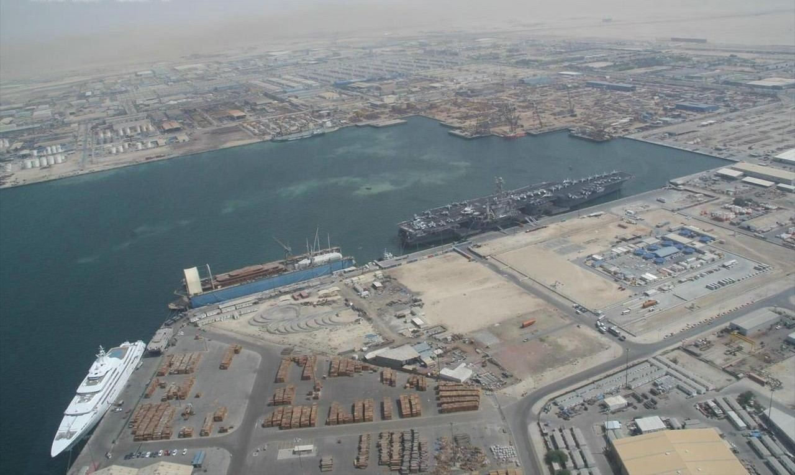

مصانع إعادة تعبئة طفايات الحريق في الشرق الأوسط وشمال أفريقيا: 19 منشأة في 9 دول على الخريطة
إذا كنت تشحن أسطوانات فارغة أو نصف مستهلكة إلى الخليج، فشريكك الحقيقي ليس المشتري، بل الجهة التي تعيد تعبئتها وتختمها وتشهد عليها في الطرف الآخر. هذه الصفحة ترسم خريطة المنشآت التي تملك هذه القدرة فعلاً، بالعناوين والمواقع التي يمكنك التحقق منها بنفسك، وتقول بصراحة الشيء الوحيد الذي لا يذكره أحد في هذا القطاع: لا أحد تقريباً ينشر حجم ما يعبّئه.

⚠️ كيف أُعدّت هذه القائمة — اقرأ هذا قبل استخدامها
تم التحقق من كل شركة أدناه مقابل موقعها الإلكتروني أو صفحة الاتصال المنشورة أو قيد في سجل تجاري، خلال أكتوبر ونوفمبر 2026. لم نختلق أو نقدّر أي رقم.
- «غير معلن» لا تعني صفراً. ست شركات فقط من أصل تسع عشرة تنشر أي رقم عن عدد العاملين.
- الأرقام المعلّمة بـ * تقديرات أدلة تجارية، وليست تصريحات الشركة، وينبغي التعامل معها كنطاق لا كرقم مؤكد.
- لا يوجد مصنع ينشر حجم التعبئة — أي عدد الأسطوانات المعبأة سنوياً أو شهرياً أو في كل وردية. هذه أكبر ثغرة في السجل العام، ونقولها بدل أن نملأها بأرقام مخترعة.
- لا شيء هنا مدفوع الأجر. هذه شركات منافسة أو زميلة، أُدرجت لأن المستورد يحتاج أن يعرف من الموجود.
- الأسعار والتوافر وحالة الشهادات تتغير. اتصل قبل التعاقد؛ فالموقع الإلكتروني ليس تدقيقاً للقدرات.
1. ما الذي يُعدّ فعلاً «مصنع إعادة تعبئة»
يُستخدم هذا المصطلح بتسامح كبير في المنطقة. سيدعو وكيل الشراء مكتباً تجارياً يملك منصة تعبئة واحدة «مصنعاً». وبالنسبة لمستورد الأسطوانات، تُباع ثلاثة أشياء مختلفة تماماً تحت الاسم نفسه، ومن المفيد أن تعرف أيّها تخاطب.
المنشآت التسع عشرة موزّعة بحسب ما تستطيعه فعلاً داخلياً
التصنيف مبني على وصف كل شركة لمنشأتها. تسع شركات تملك خط تصنيع، وأربع تدير ورشة تعبئة، وست شركات مقاولات يعتمد تعبئتها على شريك أو منصة صغيرة داخلية.
يصنع جسم الأسطوانة أو يجمّع الوحدة، ثم يعبّئ ويختبر ويختم في المنشأة نفسها. يستطيع إصدار شهادات اختبار باسمه.
NAFFCO · FIREX · SFFECO · Amanco · Meteory · Albtran · MORX · Stop Fire · SCHIP
تشتري الأسطوانات أو تستلم أسطواناتك، وتعيد التعبئة والاختبار الهيدروستاتيكي وإعادة الملصقات. غالباً أسرع في الدفعات الصغيرة من المصنع.
Aromax · A-TEAM · Majan National · Asayab
يصمّم ويركّب أنظمة الإطفاء؛ وإعادة التعبئة بند خدمي، وأحياناً مُسنَد لطرف ثالث. مناسب لعقود الصيانة، وأضعف كشريك تعبئة.
Q Fire · Advance Technical Services · Peninsula Engineering · Alpha · NF Safety · Desautel Algérie
لمن يستورد أسطوانات من الصين، الفئة الأولى هي الأولوية: المصنع الذي يعبّئ على خطه الخاص وحده يستطيع منحك شهادة اختبار تحمل اسمه، وهذه الشهادة هي ما سيطلبه مفتش الدفاع المدني عند مشتريك.
2. أين تتمركز الطاقة، دولة بدولة
تسع عشرة منشأة تبدو رقماً كبيراً حتى توزّعها على تسع دول. ثلاث أسواق تستحوذ على أكثر من نصف القائمة، واثنتان من هذه الثلاث ليستا دولاً خليجية على الإطلاق.
عدد المنشآت الموثّقة في كل دولة
عدد منشآت التعبئة أو التصنيع التي لها عنوان عام، وليس حجم السوق. الدولة التي لها إدخال واحد قد تضم عشرات الورش الصغيرة التي لا تُعلن عن نفسها.
الرقمان السعودي والكويتي يبدوان ضعيفين، وهما كذلك فعلاً — لكن ليس لغياب الطاقة. السعودية تركّز الإنتاج في عدد قليل من المجموعات الضخمة، وشركة SFFECO وحدها تغطي الرياض وجدة والدمام والمدينة من كيان واحد. أما إعادة التعبئة في الكويت فتهيمن عليها ورش صغيرة معتمدة من قوة الإطفاء الكويتية ولا تحتفظ بموقع إلكتروني. إذا كان عملك في أي من السوقين، فتوقّع أن تجد شريكك عبر كفيل محلي، لا عبر محرك بحث.
3. ما عمر هذا القطاع؟
هنا يكون السجل العام واضحاً على نحو غير معتاد، لأن سنوات التأسيس مطبوعة في ملفات الشركات والقيد التجاري. والنمط ليس ما يفترضه معظم المستوردين.
عقد التأسيس للمنشآت السبع عشرة التي نشرت سنة
إدخالان (A-TEAM الكويت وDesautel الجزائر) لا يعلنان سنة تأسيس محلية، واستُثنيا من الأعمدة.
يلفت النظر أمران. الأول أن الثمانينيات هي العمود الفقري لهذا القطاع — خمس من أصل سبع عشرة تأسست بين 1980 و1989، وأربع من هذه الخمس ما زالت تعمل بالاسم نفسه. وهذه مجموعة متجانسة بشكل غير معتاد لقطاع تصنيعي في المنطقة.
والثاني، وهو الأنفع للمستورد، أن أقدم المصانع في شمال أفريقيا لا في الخليج. شركة SCHIP في الدار البيضاء تعود إلى 1970، وMeteory في القاهرة إلى 1975، وكلتاهما أقدم من أي إدخال خليجي في هذه القائمة. تأسّس الجيل الخليجي في الثمانينيات والتسعينيات على موجة البناء، بينما كانت المغرب ومصر تصنّعان الطفايات للطلب المحلي قبل ذلك بعقد، وراء سياسات إحلال الواردات.
4. كم شخصاً يعمل في هذه المصانع؟
هنا ينهار السجل. وهذا هو الرسم البياني الأهم، لأنه رمادي في معظمه.
من ينشر عدد العاملين أصلاً
تم التحقق من تسع عشرة شركة؛ ست منها تنشر رقماً على موقعها أو في قيد تجاري.
| الشركة | الدولة | العاملون | المصدر |
|---|---|---|---|
| SFFECO | السعودية | +750 | بيان الشركة |
| Alpha | البحرين | 51–200 | تقدير دليل تجاري * |
| Stop Fire (SFED) | المغرب | 51–100 | إدراج في دليل تجاري * |
| MORX | مصر | 21–100 | إدراج في دليل تجاري * |
| Albtran | مصر | 54 | موقع الشركة |
| Aromax | البحرين | 11–15 | إدراج في دليل تجاري * |
الرقم الوحيد الذي تذكره شركة عن نفسها بصراحة هو 750+ لشركة SFFECO، وهو يتناسب مع مجموعة تدير أربعة فروع وأكثر من 600 منتج معتمد. أما ما سواه فإما غائب أو نطاق من طرف ثالث عريض بما يجعله عديم الفائدة في التخطيط. ولاحظ المعنى العملي: لا يمكنك قياس مورّد بعدد العاملين في هذه المنطقة. ورشة من 15 شخصاً في المنامة تعلن تعبئة خلال 24 ساعة قد تنجز طلبك أسرع من مصنع بـ 700 شخص ينتظر دورة شهادات.
ما يُفصح عنه مقابل ما يحتاجه المشتري فعلاً
نسبة المنشآت التسع عشرة التي تنشر كل بيان. هذا هو الشكل الصادق لشفافية السوق.
صفر من تسع عشرة تنشر حجم التعبئة. وأربع تصف الاختبار الهيدروستاتيكي صراحة. وأي جهة تعرض عليك «تصنيفاً موثّقاً للطاقة» لمصانع إعادة التعبئة في هذه المنطقة فهي إما تخمّن أو تبيع شيئاً — فالأرقام الأساسية ليست في المجال العام.
5. الدليل: 19 منشأة في 9 دول
العناوين كما نشرتها صفحة الاتصال لكل شركة أو قيد تجاري. وحين تدير الشركة مصنعاً ومكتب بيع منفصلين، يُذكر المصنع أولاً، لأنه العنوان الذي يهم عند وصول حاوية.
| # | الشركة والعنوان | الدولة | التأسيس | العاملون | سجل الخدمة المعلن |
|---|---|---|---|---|---|
| 1 | NAFFCOJebel Ali Free Zone, Dubai, PO Box 262169 · naffco.com | الإمارات | 1991 | غير معلن | تعبئة وفحص داخلي واختبار هيدروستاتيكي وإعادة دهان بالسفع في منشأة واحدة |
| 2 | FIREXIndustrial Area 13, Sharjah, PO Box 22436 · firexuae.com | الإمارات | 1983 | غير معلن * | مصنع خاص في الشارقة؛ طفايات ومضخات ومركبات وتصنيع حسب الطلب |
| 3 | SFFECO2nd Industrial Area, Al-Kharj Rd, Riyadh 11515 · sffeco.com | السعودية | 1983 | +750 | أكثر من 600 منتج معتمد؛ فروع في الرياض وجدة والدمام والمدينة؛ أكثر من 10,000 عميل |
| 4 | Q Fire (QatarFire)Al Aziziya St, Doha, PO Box 96491 · qatarfire.com | قطر | 2010 تقريباً | غير معلن | أكثر من 850 مشروعاً منجزاً؛ معتمدة من الدفاع المدني القطري؛ استجابة 24 ساعة |
| 5 | Advance Technical ServicesPO Box 8395, Doha · atsdoha.com | قطر | 2008 | غير معلن | توريد وإصلاح وتعبئة وصيانة طفايات الماء والبودرة والكيميائي الرطب وثاني أكسيد الكربون والرغوة |
| 6 | Peninsula Engineering GroupDoha · pegqa.com | قطر | 2007 | غير معلن | مستودع داخلي لتجهيز التوصيلات وتعبئة FM-200 وNOVEC |
| 7 | A-TEAMShop 16, Blk G, Shuwaikh Industrial 3, Kuwait · ateamkw.com | الكويت | غير معلن | غير معلن | متجر طفايات وورشة تعبئة مخصصة؛ مقاول معتمد من قوة الإطفاء الكويتية |
| 8 | AmancoRusayl Industrial City, Muscat · amancooman.com | عُمان | 1996 | غير معلن | أحد عشر طرازاً معتمداً بعلامة Kitemark؛ تعبئة وعقود صيانة؛ معتمدة من الدفاع المدني العُماني |
| 9 | Majan National DevelopmentAl Mabellah, Muscat · mnd-om.com | عُمان | 2012 | غير معلن | منشأة منفصلة مجهزة بآلات تعبئة طفايات كاملة |
| 10 | AlphaSitra / Manama · alpha.bh | البحرين | 1989 | 51–200 * | أنظمة حماية متكاملة وطفايات وأنظمة إخماد آلية |
| 11 | Aromax Fire & SafetyBldg 122, Rd 326, Blk 303, Sh. Hamad Rd, Manama, PO Box 1803 · aromaxfire.com | البحرين | 1982 | 11–15 * | تعبئة وصيانة وشهادات إعادة صلاحية خلال إشعار 24 ساعة في أي موقع بالبحرين |
| 12 | National Fire Fighting Co. (NF Safety)PO Box 11645, Manama · nfsafety.com | البحرين | 2003 | غير معلن | مقاولات مكافحة حريق وصيانة وخدمة طفايات |
| 13 | Meteory10th of Ramadan City, Sharqia · meteory-eg.com | مصر | 1975 | غير معلن | مصنع منذ 1986؛ 15 فرعاً على مستوى الجمهورية؛ تصدير إلى أكثر من 10 دول |
| 14 | AlbtranPlot 231, Area C, 10th of Ramadan, Sharqia · albtran-eg.com | مصر | 2005 | 54 | 594 مشروعاً و451 عميلاً منشورة على موقعها |
| 15 | MORX Fire Fighting SolutionsFactory: 10th of Ramadan City · Office: Nasr City, Cairo | مصر | 2019 | 21–100 * | شهادات LPCB وFM وVdS وBSI Kitemark منشورة؛ تعبئة وصيانة |
| 16 | Stop Fire (SFED)355 Bd Mohammed V, Casablanca · sfed.ma | المغرب | 1982 | 51–100 * | تصدّر نحو 30% من إنتاجها، أغلبه إلى أفريقيا؛ حصتها المحلية نحو 65% |
| 17 | SCHIP31 rue Khouzame, hay Erraha, 20200 Casablanca | المغرب | 1970 | غير معلن | منتِج وموزّع ومزوّد خدمة؛ طفايات متنقلة وأنظمة ثابتة وإعادة تعبئة |
| 18 | Asayab Global Services227 bd Oued Sebou, 20000 Casablanca | المغرب | 2010 | غير معلن | منتِج وموزّع ومزوّد خدمة؛ إعادة تعبئة الطفايات المتنقلة |
| 19 | Desautel AlgérieAlgiers · desautel.fr | الجزائر | غير معلن (المجموعة 1932) | غير معلن | إرث في تصنيع الطفايات، وأنظمة RIA والكشف وأنظمة البودرة الثابتة |
* تقدير من دليل تجاري غير مؤكد من الشركة. «غير معلن» تعني أن المعلومة غير منشورة. العناوين الإلكترونية كما تنشرها كل شركة؛ بعض المواقع لا تُفتح إلا من داخل المنطقة.
6. قراءة القائمة بحسب المنطقة
الخليج: مصانع كبيرة وطبقة وسطى غائبة
تهيمن على الإمارات والسعودية وعُمان مجموعة صغيرة من المصنّعين المتكاملين رأسياً — NAFFCO وFIREX وSFFECO وAmanco — وكل منهم يصنع ويعبّئ ويختبر ويشهد في المنشأة نفسها. وتحتهم لا يوجد تقريباً أي شيء في شريحة المئة إلى الثلاثمئة عامل. إما أن تتعامل مع بطل وطني أو مع ورشة من خمسة عشر شخصاً؛ ومصنع التعبئة المتوسط المريح يكاد لا يكون موجوداً. هذه الفجوة هي سبب ذهاب مستوردين خليجيين كثيرين إلى المصنّع مباشرة حتى لطلب من مئتي وحدة.
قطر والبحرين: مقاولون يعبّئون
السوقان صغيران بما يكفي لتصبح إعادة التعبئة جزءاً من عقد الصيانة لا خدمة مستقلة. Q Fire وAdvance Technical Services وAlpha وNF Safety تقدّم نفسها كمقاول أنظمة أولاً. فإن احتجت تعبئة أسطوانات، ستشتري عقد صيانة سنوياً، لا دوراً في خط تعبئة.
مصر: أعمق قاعدة تصنيعية
مصر هي السوق الوحيدة في هذه القائمة التي تضم ثلاثة مصنّعين حقيقيين متجاورين في منطقة صناعية واحدة — مدينة العاشر من رمضان شرق القاهرة. Meteory هناك منذ 1986، وAlbtran منذ 2005، وMORX منذ 2019. السبب هو تكلفة العمالة: تصنيع الطفايات المصري ينافس الصين في تكلفة التجميع بطريقة لا تستطيع مصانع الخليج مجاراتها. ولمن يوازن بين شريك محلي ومورّد صيني، مصر هي السوق التي تكون فيها المقارنة متقاربة فعلاً.
المغرب: قديم وتصديري وفرنسي التأثير
ثلاث من أقدم أربع شركات في القائمة مغربية. SCHIP تعود إلى 1970، وStop Fire إلى 1982، وكلتاهما تعمل في الحزام الصناعي بالدار البيضاء. كما أن المصانع المغربية هي الأكثر توجهاً للتصدير في شمال أفريقيا — Stop Fire تصدّر نحو 30% من إنتاجها، أغلبه جنوباً إلى أفريقيا. فإن كنت تبحث عن شريك تعبئة لخدمة مشترين في غرب أفريقيا، فالدار البيضاء قاعدة أكثر منطقية من دبي.
حيث يصمت السجل
الجزائر وتونس وليبيا لديها طاقة تعبئة حقيقية، لكن أثرها العام القابل للتحقق شبه معدوم. Desautel Algérie هو الإدخال الوحيد الذي أمكن تأكيده بعنوان مؤسسي مستقر. هذا ليس ادّعاءً بعدم وجود شيء هناك — بل بيان بأن المستورد الأجنبي لا يستطيع بناء قائمة مرشحين لهذه الأسواق من المصادر العامة، وسيحتاج إلى وكيل محلي.
7. أربع نتائج يمكن للمستورد أن يستخدمها فعلاً
- إعادة التعبئة نشاط جانبي لمصنّع، وليست قطاعاً مستقلاً. تسع من تسع عشرة منشأة موجودة أساساً لتصنيع أشياء؛ والتعبئة بند خدمي ملحق بالإنتاج. خطّط حول المصنع، لا حول «شركة إعادة تعبئة».
- مركز ثقل القطاع في الدار البيضاء والقاهرة في السبعينيات والثمانينيات، لا في دبي في 2010. وإن كان العمر مؤشراً على الموثوقية، فلمصانع شمال أفريقيا سبق بعشرين عاماً على معظم الأسماء الخليجية.
- عدد العاملين ليس مؤشراً على القدرة هنا. أدقّ رقمَي خدمة وجدناهما جاءا من مصنع مصري بـ 54 عاملاً وورشة بحرينية بـ 11 إلى 15 عاملاً — وليست أي منهما كبيرة.
- لن يخبرك أحد بحجمه. وبما أن معدل التعبئة غير منشور في المنطقة كلها، فالطريقة الوحيدة الموثوقة للحكم على شريك هي زيارة المصنع أو تدقيق طرف ثالث، لا كتيّب تعريفي.
8. ماذا يعني هذا إن كنت تشتري من الصين
النتيجة العملية قرار توريد من خطوتين. اختر أولاً منشأة الوجهة — التي ستعيد التعبئة وتختم وتشهد — وبعدها فقط حدّد حجم حاويتك بما تستطيع تلك المنشأة استيعابه. وعكس هذا الترتيب هو الخطأ المكلف الأكثر شيوعاً الذي نراه: مستورد يملأ حاوية 40 قدماً بأسطوانات فارغة، ثم يكتشف أن الشريك المحلي لا يستطيع اختبار أكثر من ستين أسبوعياً.
ومن البيانات أعلاه تتبع قواعد قليلة:
- اطلب شهادة الاختبار قبل السعر. المصنع الذي لا يملك خط اختبار هيدروستاتيكي خاصاً لا يستطيع إصدارها، ولا خصم يعوّض ذلك.
- قارن سنة التأسيس بتاريخ الشهادة. مصنع تأسس في 2019 ويقدّم مستند اختبار بنمط 2005 يقول لك شيئاً.
- احسب شبكة الفروع لا المكتب الرئيسي. فروع SFFECO الأربعة وفروع Meteory الخمسة عشر هي سبب وصول وحداتها إلى مواقع المشاريع؛ وورشة بعنوان واحد لن تفعل ذلك.
- أكّد القدرة على الملصقات العربية كتابةً. كل سوق خليجي يشترطها، وتُنفَّذ في مصنع التعبئة لا في الميناء.
قراءات ذات صلة: الدليل الكامل لتصدير الطفايات المستعملة من الصين، والكلفة الحقيقية لحاوية 40 قدماً جديدة مقابل مستعملة، ورمز HS والرسوم الجمركية في دول الخليج.
الأسئلة الشائعة
كم عدد مصانع إعادة تعبئة طفايات الحريق في الشرق الأوسط؟
لا يوجد إحصاء رسمي، وأي رقم واحد ينبغي التعامل معه بحذر. هذه الصفحة توثّق 19 منشأة في تسع دول تنشر عنواناً وموقعاً قابلاً للتحقق. العدد الحقيقي أعلى بكثير — أسواق الخليج وحدها تضم على الأرجح مئات الورش الصغيرة المعتمدة من الدفاع المدني — لكن الغالبية الساحقة بلا حضور إلكتروني ولا يمكن التحقق منها عن بُعد.
لماذا لا تنشر هذه الشركات عدد الأسطوانات التي تعبّئها؟
لأن إعادة التعبئة بند خدمي بهامش منخفض ملحق بالتصنيع أو بعقود الصيانة، وليس قطاعاً أعمالياً مُبلَّغاً عنه. ولا أي شركة هنا مدرجة في بورصة تلزمها بالإفصاح القطاعي، فلا يوجد ضغط تنظيمي للنشر. عملياً، يُتفاوض على الحجم سراً بين المصنع والعميل.
أي دولة لديها أرخص إعادة تعبئة في المنطقة؟
مصر من حيث تكلفة العمالة، تليها المغرب. مصانع الخليج تحمل أعباءً أعلى — إيجارات المناطق الحرة والعمالة الوافدة ورسوم الشهادات — تنتقل إلى سعر التعبئة. لكن تكلفة التعبئة نادراً ما تكون العامل الحاسم: فالشحن والجمارك على الأسطوانات تتجاوز عادة الفرق في سعر الوحدة، لذا فأرخص مصنع ليس غالباً أرخص إجمالي.
هل تستطيع ورشة تعبئة إصدار شهادة اختبار هيدروستاتيكي؟
فقط إذا كانت تملك وتشغّل معدات اختبار هيدروستاتيكي ومعترف بها من السلطة المحلية للقيام بذلك. في الإمارات يعني هذا منشآت مسجلة لدى وزارة الصناعة والتكنولوجيا المتقدمة؛ وفي السعودية جهات معترف بها من SASO؛ وفي قطر موافقة الدفاع المدني. والورشة التي ترسل الأسطوانات للاختبار في مكان آخر ستعيد شهادة باسم غير اسمها — وهذا مشكلة إن كان مفتش مشتريك يطابق الختم مع المورّد.
هل هذه القائمة كاملة أو مرتّبة؟
لا هذا ولا ذاك. هي عيّنة موثّقة لا إحصاء شامل، والترتيب جغرافي لا بحسب الحجم أو الإيراد أو القدرة. ولم تدفع أي شركة مقابل الظهور. إن كنت تعرف منشأة يفترض أن تكون هنا، أخبرنا وسنتحقق من سجلها المنشور قبل إضافتها.
تشتري أسطوانات؟ ابدأ بالمنشأة لا بالسعر
تورّد FireGuard Trading طفايات بودرة جافة ورغوة وثاني أكسيد كربون وماء وكيميائي رطب، جديدة ومجددة، من الصين إلى مستوردين في دول الخليج وشمال أفريقيا. ونستطيع التسعير وفق قدرة منشأة وجهة محددة — وحدات مسبقة الملصقات بالعربية والإنجليزية، ومستندات اختبار بالصيغة التي يتوقعها معبّئك المحلي أو مفتش الدفاع المدني.
أخبرنا بدولة الوجهة، والمنشأة التي تنوي العمل معها، والكمية، وسنرد خلال 24 ساعة بسعر FOB أو CIF ومجموعة المستندات المطلوبة لذلك السوق.